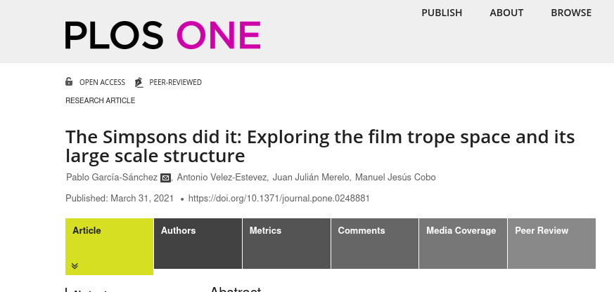
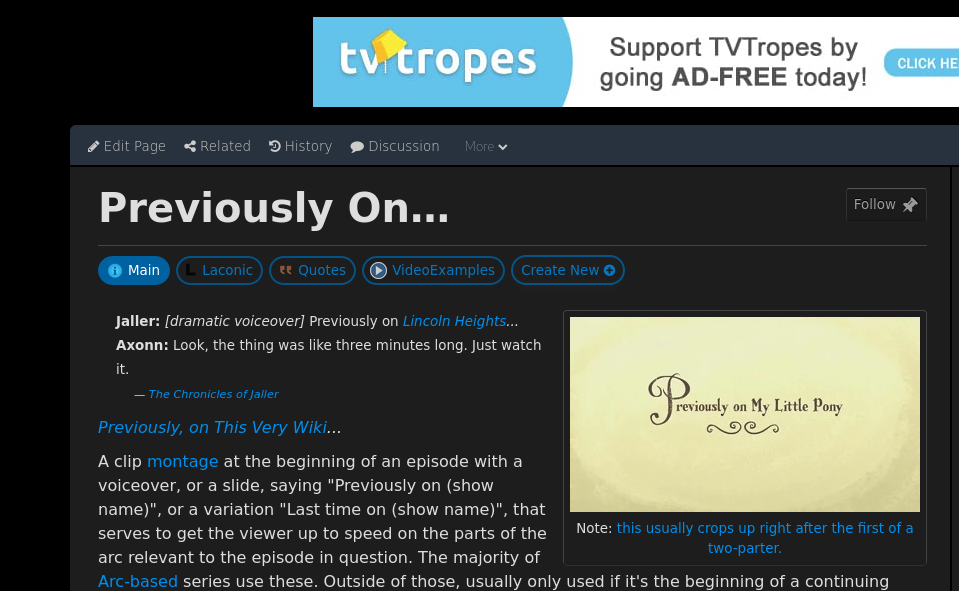
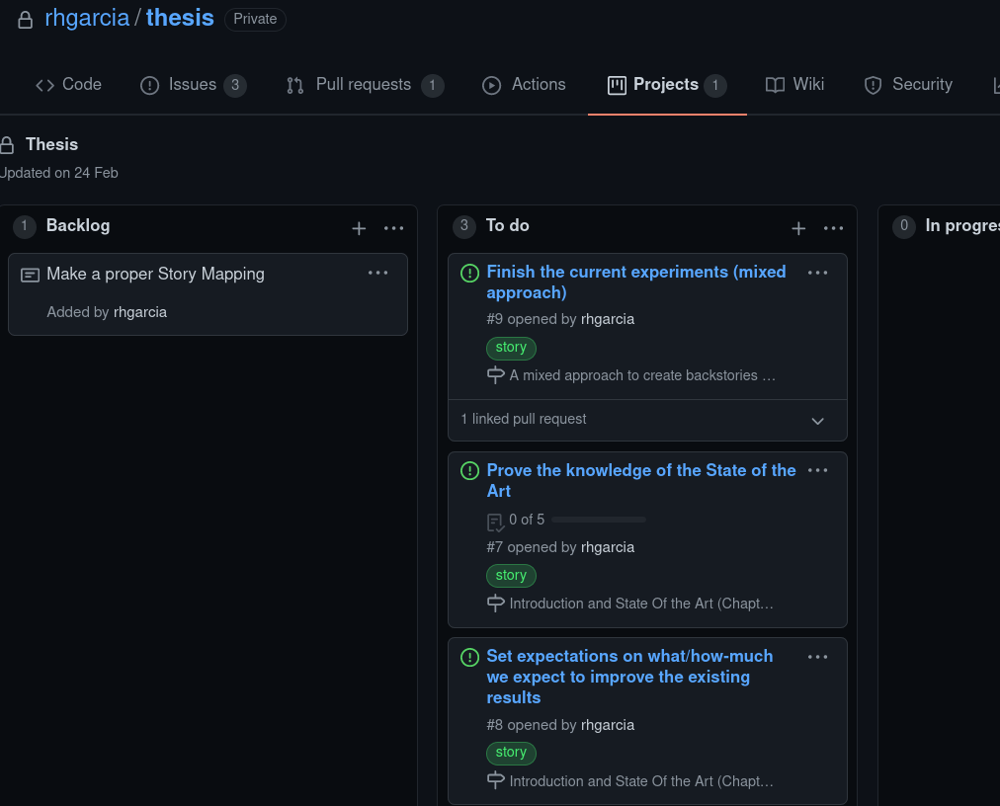

Putting the science back in data science
Advanced computation for Data Science, Southern Connecticut University
github.com/JJ/science-data-science
Professor at the U. Granada

Programming since 1983 github.com/JJ
García-Sánchez P, Velez-Estevez A, Julián Merelo J, Cobo MJ (2021)
The Simpsons did it: Exploring the film trope space and its large scale structure.
PLoS ONE 16(3): e0248881.
In the beginning, we had tropes
From
tvtropes.org

A trope is a repeated motif or pattern in fiction
From Tropes
... through average reviews ...
... to predicted cohesiveness and quality
Train a neural net to predict rating from tropes
Use it to optimize "trope bag"
García‐Ortega, RH, García‐Sánchez, P, Merelo‐Guervós, JJ. StarTroper, a film trope rating optimizer using machine learning and evolutionary algorithms. Expert Systems. 2020; 37:e12525. https://doi.org/10.1111/exsy.12525

Science has a
data
problem
Of course, there's also COVID-19
Data science has solved that problem
as done in the industry
Why?
Because software development had a problem
And it was solved using the agile mindset
Individuals and interactions over processes and tools
Working software over comprehensive documentation
Customer collaboration over contract negotiation
Responding to change over following a plan
Data science in industry works because it's agile
Let's make science Agile
I never remember where's the paper accepted in a conference.
I use GitHub search now
First hypothesis
Open over closed
Interaction with the work via pull requests
Also issues, forks...
Free vulnerability scanning
A call from Hollywood
It should be easy to respond to evolving requirements
Second hypothesis
Stakeholder collaboration over vertical chains-of-command
Where are all my tropes?
García-Ortega, R.H., García-Sánchez, P., & Guervós, J.J. (2020). Tropes in films: an initial analysis. ArXiv, abs/2006.05380.
Sources change
Third hypothesis
Testing at all levels over hypotheses proved once
I needed to change
\ref →
\cite
Easy, amirite?
✓ It was open
✓ It was developed using issues
✓ It was tested
Dude, where's my data?
import pandas as pd
import pygraphviz as pgv
from IPython.display import display, Latex
from scipy import stats
DBTROPES_GENERATED_FILE_PATH = '/Users/phd/Downloads/dbtropes/dbtropes-20160701.nt'
TROPESCRAPER_GENERATED_FILE_PATH = '/Users/phd/workspace/made/tropescraper/bin/tvtropes.json'4th, last, hypothesis
Reproducibility and replicability over publishability
Doing science in XXI
Just like it used to be
We need to prove those hypotheses
Science, heal itself
➀ The product is a workflow
Papers and reports are side effects
☑ Reproducibility ☑ Openness ☑ Tests ☑ Collaboration
And opens up many possibilities
Dashboards, interactive charts, APIs...
Code the workflow
# tasks.py
@task
def build_paper_latex_arxiv(context):
print("Building latex file and figures through pweave ...")
command = 'cd papers && pweave -f texminted tropescraper_arxiv.texw'
run(command, hide=False, warn=True)Using knitr/pweave/rmarkdown
We would need to find out first if this method really works....
%
\begin{figure}
<<generations.fs.table,echo=FALSE, results="asis">>=
library(ggplot2)
library(ggthemes)
generations <- read.csv("data/ng-spambase1-generations.csv")
ggplot(generations,aes(x=Generation,y=Average.F2,group=Generation,color="Average F2"))+geom_boxplot()+geom_boxplot(aes(x=Generation,y=Max.F2,group=Generation, color="Max F2", fill="Max F2"))+theme_tufte()
@
\caption{Boxplot of the best F2 (filled) and average F2 (clear, transparent) over 15 different runs for the spambase1 dataset partition.}
\label{fig:gen:f2}
\end{figure}➁ You have the idea, you own the product
🔲 Reproducibility ☑ Openness ☑ Tests ☑ Collaboration
Doctoral student owning his thesis
➂ Use common software development tools and practices
☑ Reproducibility ☑ Openness ☑ Tests ☑ Collaboration
As well as common (industrial) data science best practices
CI/CD workflows, MLFlow...
Avoid smells
lint-python:
runs-on: ubuntu-18.04
name: Python source lint
steps:
- uses: actions/checkout@v2
- name: Set up Python
uses: actions/setup-python@v2
with:
python-version: 3.7
- name: Export neccesary variables
run: |
echo "::set-env name=PYTHONPATH::${{github.workspace}}"
echo "::set-env name=KERAS_BACKEND::theano"
- name: Install necessary tools
run: pip install nox
- name: Perform linting
working-directory: ${{ github.workspace }}
run: nox -e lint